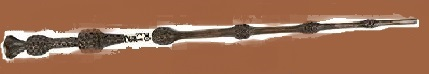

Elder Wand

The Elder Wand is one of three objects that make up the fabled Deathly Hallows.
According to "The Tale of the Three Brothers", it was the first Hallow created,
supposedly by Death himself. It was bestowed upon Antioch Peverell after he requested,
as his bounty, a wand worthy of someone who had outsmarted Death. According to legend,
whoever united the wand with the other two Hallows
(the Resurrection Stone
and the Cloak of Invisibility)
would become the Master of Death.
It is said to be the most powerful wand that has ever existed, able to perform
feats of magic that would normally be impossible even for the most skilled wizards,
such as mending another wand damaged beyond normal magical repair.
The Elder Wand's core is the tail hair of a Thestral, a potent yet tricky substance
to master; only a witch or wizard who is capable of accepting death can do so, since
only by them can a Thestral hair even be seen
Hello